Storyboard · Shot Variations · New Visual Perspectives
Under the Asphalt — Original and New Variations
Under the Asphalt is a short storyboard (see link below) drawn from a simple script, in which two characters prepare a heist. The aim is solely to represent a story with visual coherence — maintaining the identity of faces, bodies and settings, using open-source frameworks and a single pipeline architecture (see link to the ComfyUI section of Posts). This page is not a modified version of the storyboard, but a set of additional storyboard images — added or swapped in through a ComfyUI utility (see link) by adjusting certain generation parameters to explore the same story from a different point of view, camera lens, angle or lighting. For this reason, the aspect ratio of a shot can change from one variation to another, adapting to whichever framing best serves the focus of that image.
SYNOPSISIn a cold and evocative underground car park, John — a veteran with a weathered face — meets Elena, a precise and calculating field operative (technical style and dress, reminiscent of Rooney Mara in David Fincher's The Girl with the Dragon Tattoo). Without exchanging a word, they set their mission in motion: John reveals an arsenal hidden beneath the bonnet of a 1970 vintage Mustang. Elena arms herself, takes the passenger seat, and together they execute a high-speed entry into the city night.
CHARACTERS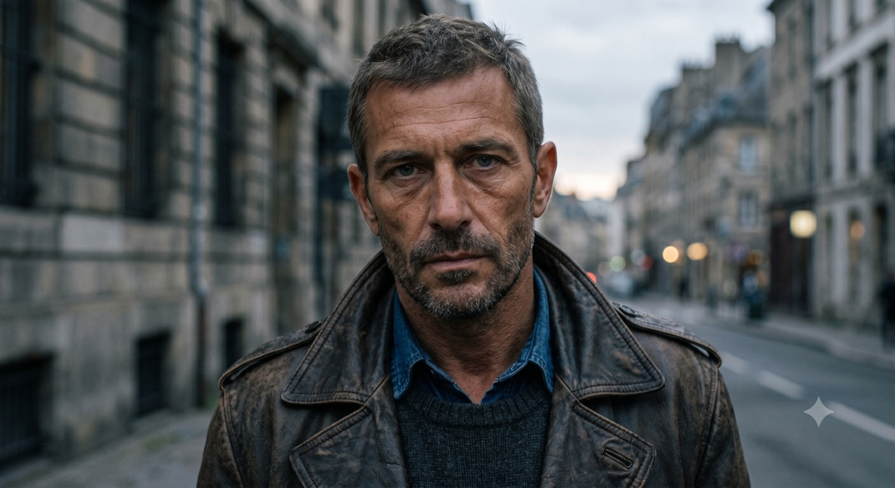
50 years old, a face marked by experience, salt-and-pepper hair. Brown leather jacket over a grey-green sweater and a light blue casual shirt. Dark corduroy trousers. Cold, deliberate, calm under pressure. Blue-green eyes, barely visible, framed by dark circles and rough stubble.
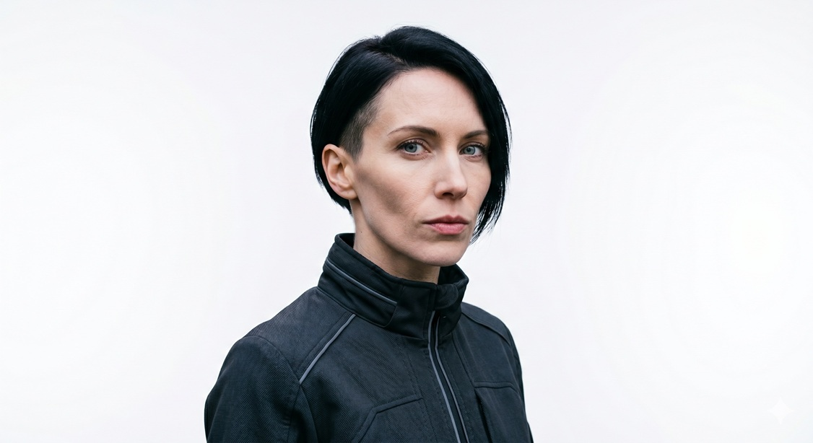
30 years old, sharp features, black asymmetric undercut bob. Thin lips, straight nose. Black technical jacket over a black thermal top. Precise, attentive, tactical and direct. The perfect working partner — and perhaps life partner — for John.
SHOT 2 — ELENA · GARAGE · PREPARATION

Underground garage, night. Elena, pale and motionless, gaze fixed straight ahead. Highly focused, tense — the heist is about to begin.
VARIATIONS SHOT 2
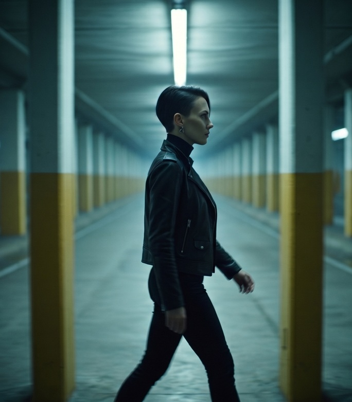
Elena walks parallel to the camera at medium distance, moving between columns — each one briefly obscures and reveals her, like a stroboscopic rhythm. Captured mid-stride, partially lit from the fluorescent above, partial shadow. The profile line of her jaw and posture reads very differently from the frontal: more predatory, less controlled. Motion implies agency.
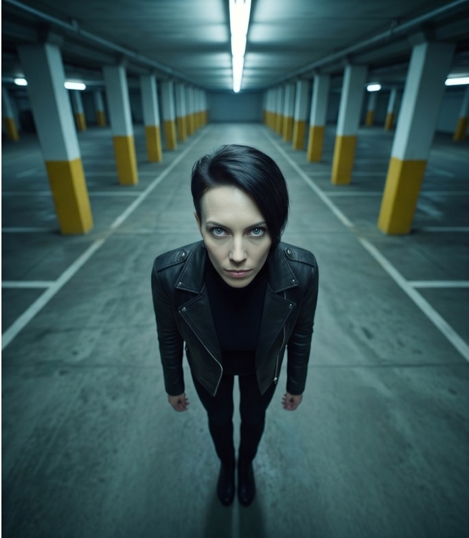
Camera high on a column, looking down at roughly 60–70° from vertical. Elena is below, slightly foreshortened, the geometry of the garage floor visible around her. The perspective is that of a CCTV camera — ironic for a character who is probably the one doing the surveilling. For one frame, she's the observed rather than the observer.
SHOT 4 — JOHN · GARAGE · MUSTANG KEY

Underground garage, night. John stands in front of his black Ford Mustang, poorly parked behind him. He watches Elena out of frame and holds the car keys with a self-satisfied air. Cold fluorescent light from the ceiling; a raking beam from above grazes across the wet concrete floor.
VARIATIONS SHOT 4
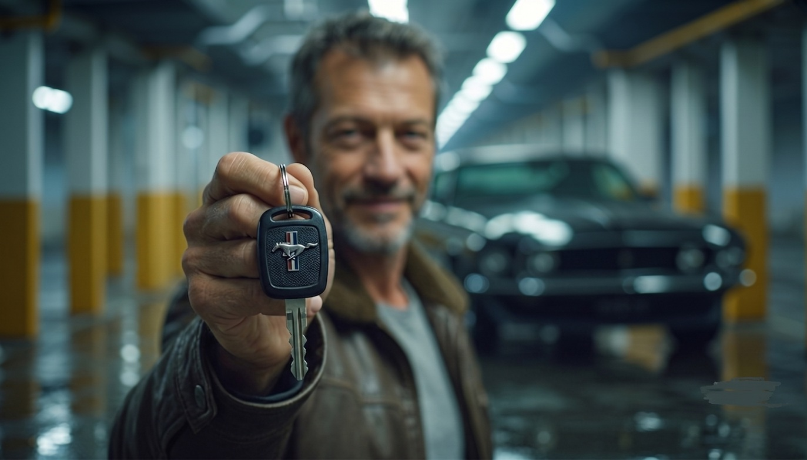
Camera close to the key, which is in sharp focus and fills a third of the frame. John's face is visible in the background — blurred but readable, the slight smile legible even at low resolution. The hierarchy inverts: the object precedes the person. The key is captured in crisp detail (the Mustang pony logo on the fob matters here) while John's emotion is present but secondary. Useful if the key carries story weight beyond this scene.
Reverse shot: camera at Mustang hood level facing John. Placed low at the front of the car, shooting back toward John. The Mustang's hood occupies the foreground lower edge of frame. John faces us (or near three-quarters), key between him and the lens. The car is now a presence that frames the shot rather than a background detail — it has become a participant, an entity looking back at its owner.
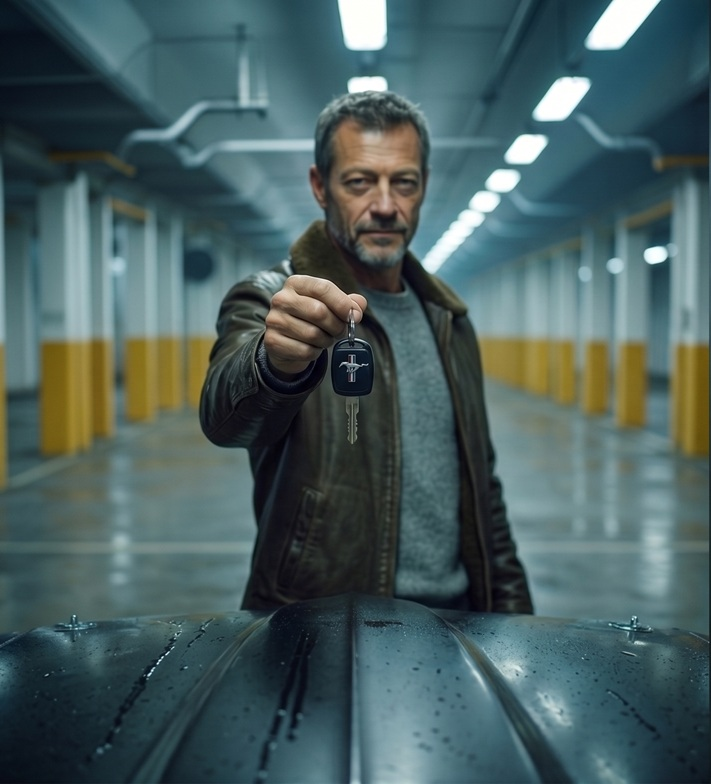
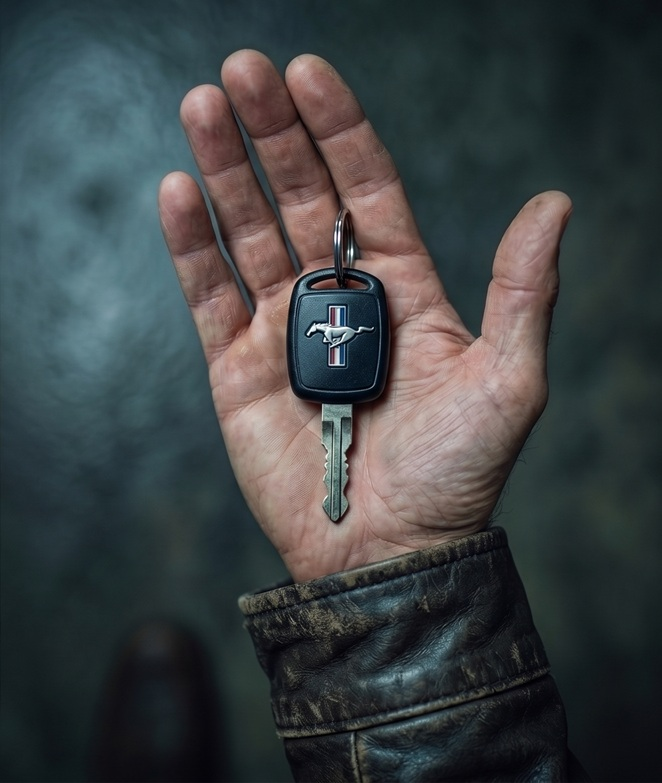
Overhead detail: hand and key only. Directly above or at steep 45° — just John's hand emerging from the leather jacket sleeve, holding the key. No face, no car, no garage. The key becomes a relic or a trophy. This is the most symbolic of the three: it strips the moment down to its essential object. The contrast between worn leather and metal key is the entire image. Works as an insert cut or chapter-break frame.
PALETTE ANALYSIS
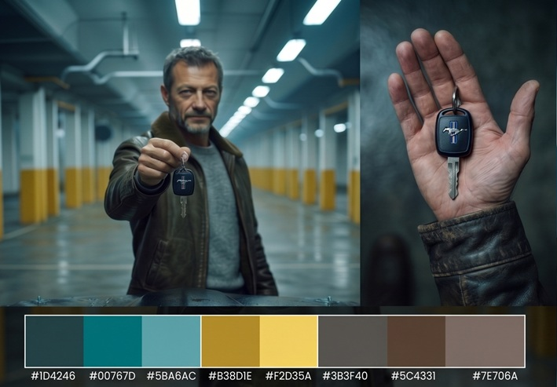
A complementary scheme of cool teal and warm amber, creating deep space and a clear hierarchy. The cool base is offset by the amber, which highlights the man's leather jacket and face. The central red/blue accent of the fob draws the eye and anchors the object in the centre of the frame.
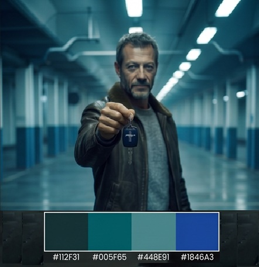
Four swatches define a monochromatic cold palette built entirely on the teal-to-blue axis, with zero warm interruption — unusually disciplined for a generated image, where diffusion models normally introduce stray warm tones in skin and leather. John's face and jacket, which in the original shots carried brown and warm grey, have been cooled into the same teal family. The character is being absorbed by the environment rather than contrasted against it.
SHOT 11 — MUSTANG · EXIT RAMP · ESCAPE SEQUENCE

The Mustang exits the ramp at full acceleration — front wheels slightly lifted, rear tyres burning white smoke across the asphalt. The car is intact, dominant, controlled. The colour grammar is the GARAGE split: cold teal on the left wall and streetlight above, warm amber-orange from the city sodium lamps on the right.
VARIATIONS SHOT 11
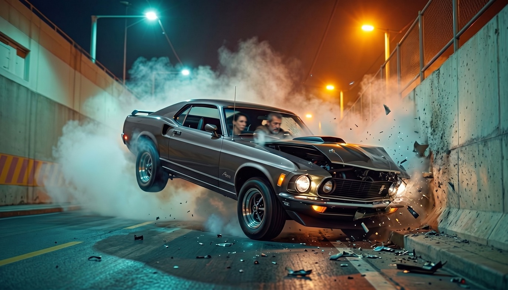
The impact has happened or is happening. The Mustang's nose has met the right-side wall — debris and glass scatter radially from the contact point, the front right corner is crushed, the hood deforms. Through the cracked windshield both John and Elena are visible as silhouettes, blurred by motion. The teal recedes, the amber intensifies from the right, and a new warm tone enters from the impact debris. The debris field is the compositional event. This is the transition shot: control becoming chaos.
The Mustang is airborne and inverted — caught at approximately 120° of rotation, rear wheels uppermost, undercarriage and exhaust exposed to camera. Tail lights faintly lit in red, trunk lid warped, rear glass gone. The right wall is a vertical crush surface — the roof compresses against it. The smoke from shot 11 still fills the left side of the frame, giving ghostly continuity with the burnout that started the sequence. The characters are no longer visible. The car has become an object rather than a vehicle. It is wreckage in mid-air.
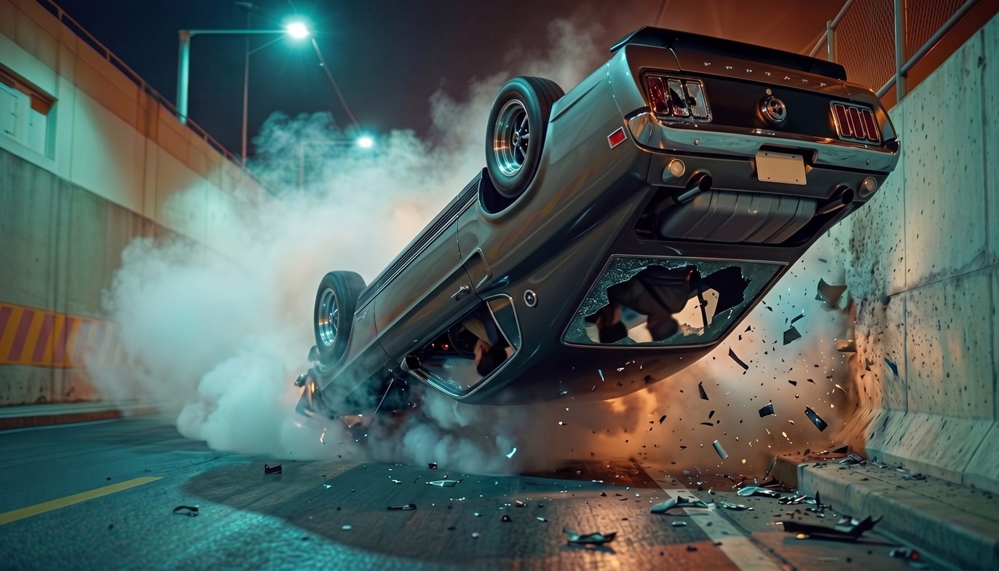
COSTUME REDESIGN — PRIVATE BANKING CLIENT VERSION TO DECEIVE THE SECURITY
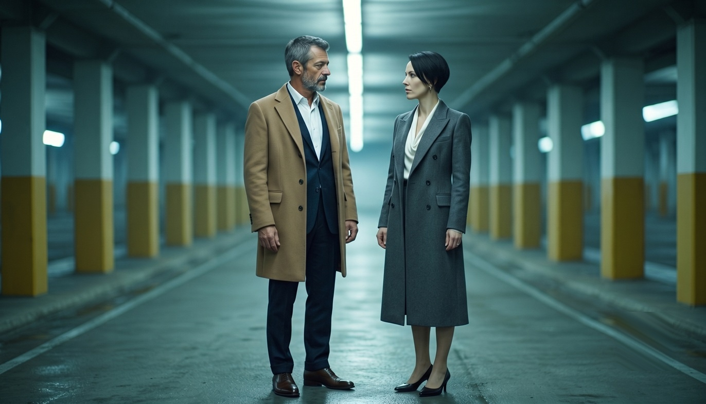
Miuccia Prada's personal style crossed with a Zurich private banker. Austere, intellectual, zero ornament — but every element impeccably made. A double-breasted coat in charcoal or slate grey wool-cashmere, mid-calf length, structured shoulders, clean lapels, no pattern. Underneath: a silk blouse in ivory or pale grey, minimal collar, slight drape at the neck — nothing buttoned to the top. Low-heeled pointed pump in black leather; no stiletto. The heel communicates authority, not seduction. The bob stays: too much a part of her identity. Makeup barely there: perfected skin, a neutral lip, nothing that reads as effort.
Northern Italian industrialist of the second generation. An anthracite suit in heavy flannel — Loro Piana fabric, Kiton or Brioni construction. Single-breasted, two-button, generous and confident cut. Worn with a white poplin shirt, no tie, top button open: the specific code of a man wealthy enough not to need to signal formality. Over the suit, a camel or tobacco cashmere overcoat — the camel-to-navy relationship echoes the brown leather jacket of the thriller version, transmuted. The grey at the temples reads as authority. The stubble becomes a close-trimmed short beard, neat enough to be deliberate.